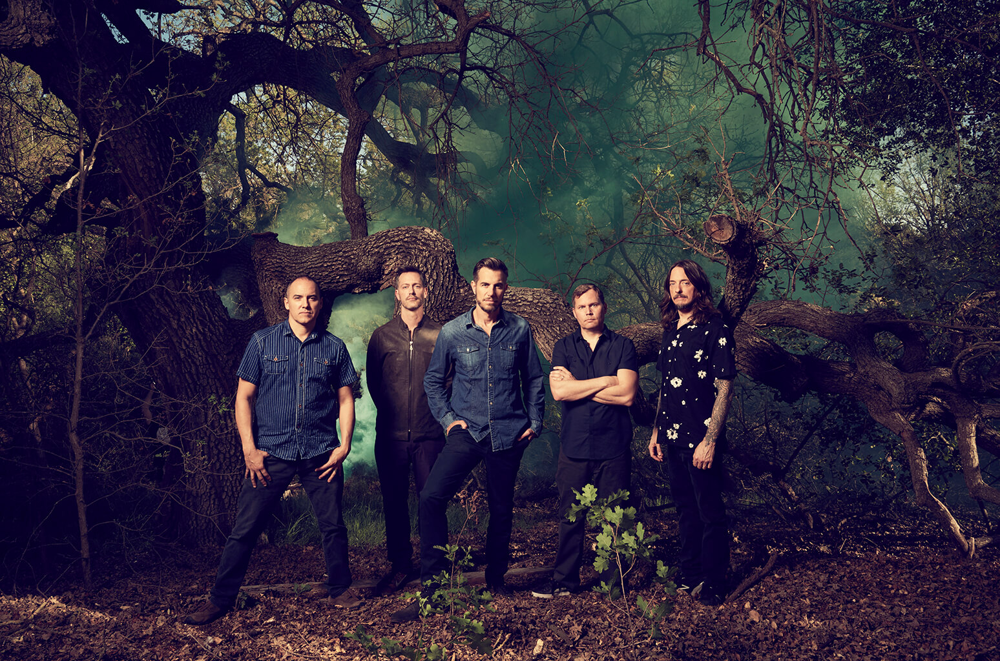

311 is from Omaha, Nebraska. The band was formed in 1988 by vocalist and guitarist Nick Hexum, lead guitarist Jim Watson (a member briefly, before
being replaced by Tim Mahoney in 1990), bassist Aaron "P-Nut" Wills, and drummer Chad Sexton. In 1992, Doug "SA" Martinez joined to sing and
provide turntables for 311's later albums.311 has released twelve studio albums, two live albums, four compilation albums, four EPs and four
DVDs. After a series of independent releases, 311 was signed to Capricorn Records in 1992 and released
the albums Music (1993) and Grassroots (1994) to moderate success. They achieved greater success with
their 1995 triple platinum self-titled album, which reached number 12 on the Billboard 200 on the
strength of the singles"Down" and "All Mixed Up", the former of which topped the Billboard Hot Modern
Rock Tracks in 1996. The band's next three albums—Transistor (1997), Soundsystem (1999) and From
Chaos (2001)—were also successful, with the first going platinum and the last two going gold. Their 2004
compilation album Greatest Hits '93–'03 was also certified platinum. The band's most recent studio
album is 2017's Mosaic. The band's name originates from the police code for the indecent exposure in
Omaha, Nebraska, after the original guitarist from the back was arrested for streaking.